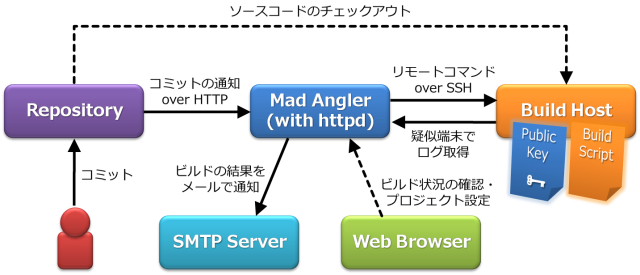
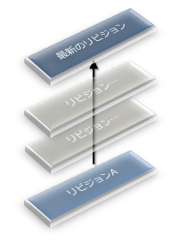
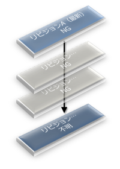

Mad Angler
Mad AnglerはAJAXな管理コンソールをもつCIツールです。
概要
次のような特徴があります。
ワークフロー
想定しているワークフローは次のような図になります。

開発チームのメンバーがリポジトリに変更をコミットすると、リポジトリはCGIリクエストを使用して、コミットされたリビジョンをMad Anglerに通知します。Mad Anglerはコミットされたリビジョンをデータベースに記録してCGIのセッションを終了し、バックグラウンドでSSHプロトコルを使用して、ビルド用ホストでビルドスクリプトをリモート実行します。リモート実行には疑似端末が割り当てられ、Mad Anglerはすべての出力をログに記録します。
ビルド用ホストでは、ビルドスクリプトが指定のリビジョンのソースコードをリポジトリからチェックアウトし、ソースコードをビルドします。ビルドが終了するとリモート実行は終了します。Mad Anglerはログの内容からビルド結果を決定し、データベースに記録します。同時に、開発チームのメーリングリストにビルド結果のレポートをメールで通知します。
加えて、メンバーはいつでもウェブブラウザで、Mad Anglerに記録されたプロジェクトのビルド状況を確認したり、Mad Anglerのプロジェクト設定を変更することができます。
ビルドするリビジョンの決定アルゴリズム
Mad Anglerは1つのプロジェクトにつき、同時にビルドするリビジョンを1つに制限しています。通常、Mad Anglerは時系列順にリビジョンをビルドしていきますが、Mad Anglerがビルド中にさらなるコミットが複数発生した場合は、できるだけ最新のリビジョンからビルドしようとします。
「次にビルドするリビジョン」を決定するアルゴリズム★1は、次のようになります。
ビルドが終了したリビジョンが最新ではない場合

リビジョンAのビルドが終了した時点で、最新のリビジョンがAでなかった場合は、次に最新のリビジョンをビルドします。リビジョンAをビルドしている間に、新しくリビジョンがコミットされると、この状況になります。
最新のリビジョンとリビジョンAの間のリビジョンはひとまずスキップされます。スキップされたリビジョンのビルド結果は不明になります。
ビルドが終了したリビジョンが最新だった場合

リビジョンAのビルドが終了した時点で、最新のリビジョンがAであった場合、「ビルド結果が成功である最新のリビジョン」を探索します。リビジョンAから順にリビジョンをさかのぼります。注目しているリビジョンのビルド結果に従い、次のように処理を分岐します。
★1 バージョン管理システムが分散型の場合はブランチを考慮する必要があるため、このアルゴリズムでは問題があります。次にビルドするべきリビジョンをうまく決定するには、プロジェクトで使用されているバージョン管理システムのことをMad Anglerがもっと知っている必要があります。とりあえず将来のリリースでは、時系列順にすべてのリビジョンをビルドするアルゴリズムも選択できるようなる予定です。